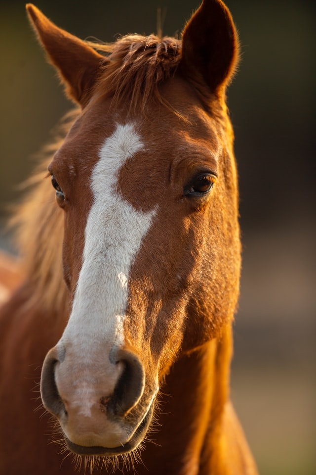

Peposo

Yes, this is a horse, and yes, we are going to eat it.
This dish calls for horse meat. Chances are, you don't normally do that. If you don't want to, or you can't get horse meat, you can use beef instead.
If you're not sure what part of the animal to use, go for a cheaper cut, with some fat on it, they're often the best for this kind of application.
Ingredients
- 1 kg of good stew horse-meat or beef
- 1 liter of dry red wine
- a handfull of black peppercorns
- salt
Steps
- Cut the meat into roughly 3 cm chunks and brown it in a large pot. You don't have to brown all of it, half is fine.
- Get the red wine in there! Scrub the bottom of the pan with a wooden spoon to get all that good stuff into the dish.
- Add the crushed peppercorns.
- Let it simmer for about four hours.
- Season with salt.